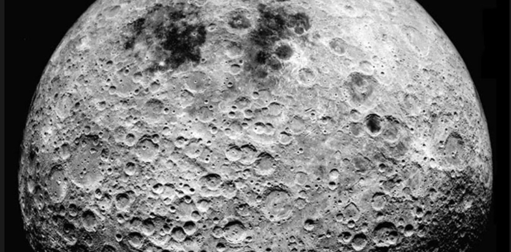

Actualidad
Fakeando la verdad
Volver a la página de inicio
Haz clic para ver la noticia de maricarmen
La noticia es cierta Maricarmen ha fallecido tras ser desahuciada de su vivienda
Haz clic para ver la noticia de la luna habitada
La noticia es falsa, la luna no está habitada por seres humanos

Haz clic para ver la noticia del Papa votando a Trump
La noticia es falsa, el Papa no votó a Trump